NS1 is a compact, headless, single channel oscilloscope featuring 7.5MHz bandwidth and a sample rate of 62.5MS/s. NS1 is designed to be just enough for many common analysis and debugging tasks. It is not intended to replace a fully featured bench top scope, but rather it is a sidearm for quick checks and computer based analysis. NS1 uses the RP2040 microcontroller for signal acquisition, leveraging its PIO and DMA peripherals to achieve a high 62.5MS/s sample rate. This makes NS1 exceptionally fast for a microcontroller based oscilloscope. Given NS1's lack of a head, waveform visualization and control are handled via Voltpeek. Voltpeek is a custom oscilloscope control software written in Python; it communicates with NS1 over simple USB serial. Voltpeek utilizes a fully command based UI which we consider to be a necessity for an easily usable PC based oscilloscope. Voltpeek can also be used for direct Python scripting to automate waveform capture and control.
Details
16384 point memory depth
4 ranges 1V, 2V, 5V, 10V, all full scale
rising edge and falling edge trigger
7.5MHz bandwidth (+0.6dB, -3dB)
62.5MS/s
Single Channel
+/-4% of full scale DC Accuracy
Here are some example waveforms captured with the NS1:
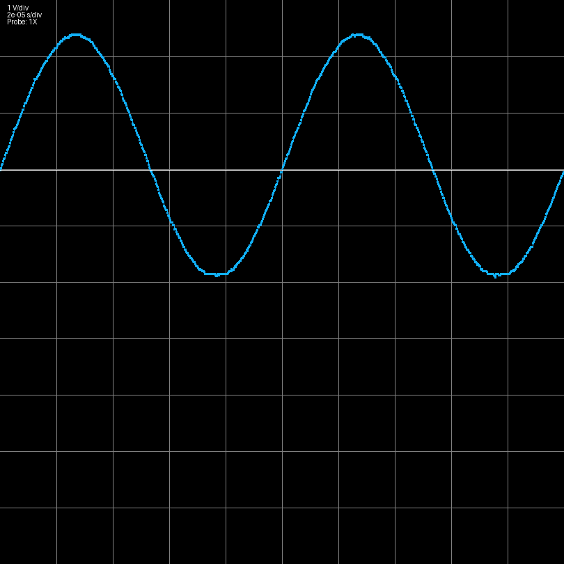
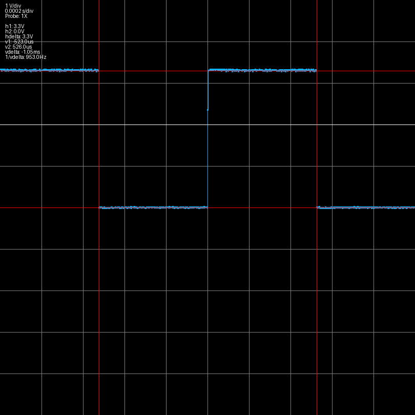
Frequency Response
Here is a measured frequency response for each of the ranges. The frequency response is shaped digitally via a 3 point FIR filter. That is, this is the overall system frequency response, not just the analog front end response.
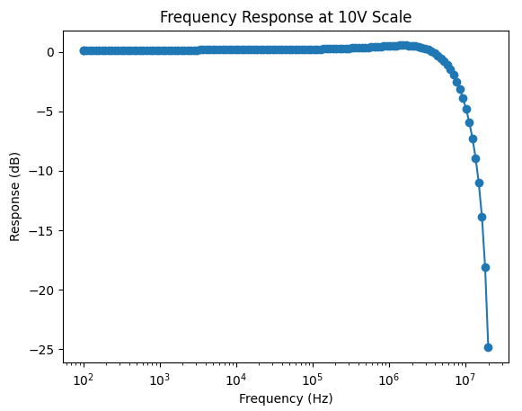
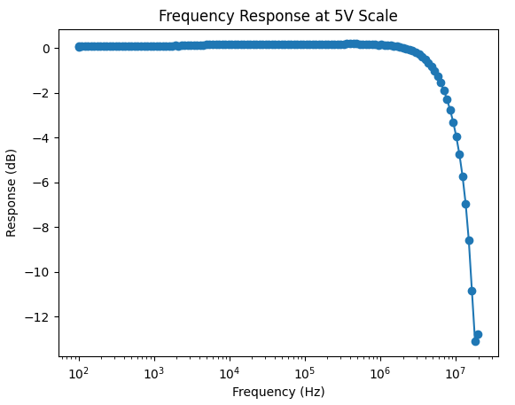
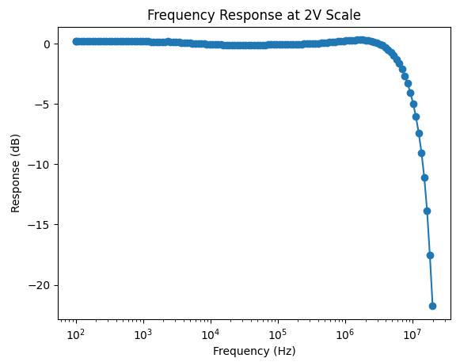
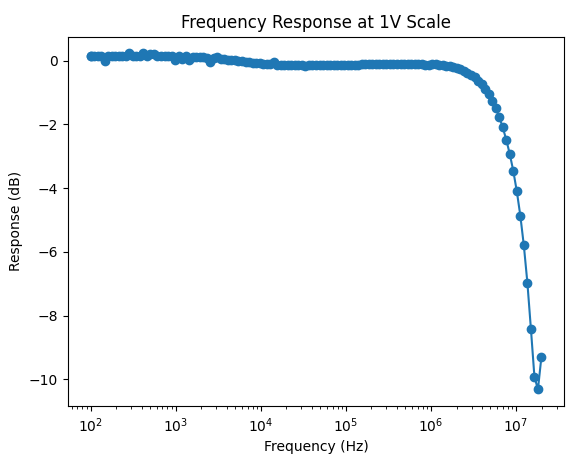
Triggering
The system has two triggering modes, force trigger and normal trigger. Force trigger starts the capture when the trigger is initiated, whereas normal trigger waits for a trigger edge event before starting the capture. With normal trigger mode, the trigger event is recorded at the center of the capture. Normal trigger is achieved with a comparator and a settable trigger voltage as shown below:
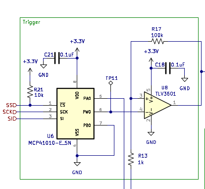
There is also a trigger correction algorithm in Voltpeek to properly center the trigger event.
Gain and Attenuation Settings There are two attenuator settings and two gain settings. These are what scale the input signal to create the four possible ranges:
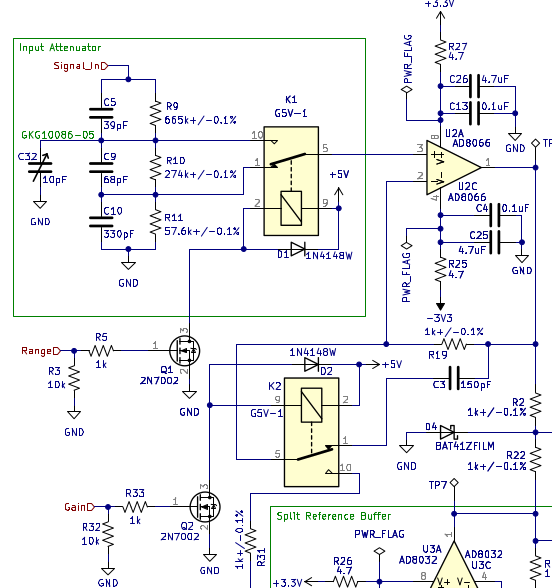
Software
is the software written to control and display the data that is sampled using NS1. Unlike other PC based oscilloscope software, Voltpeek is a command based UI. This is done because click and drag based UIs can be extremely annoying when they are controlling complicated processes. Voltpeek has a similar user interface to Vim. Different commands control the system, and the software can be put in adjustment mode. Adjustment mode is used to adjust the scales, cursors, and trigger level using the h, j, k, and lkeys.
Prior Work
NS1 is not the first oscilloscope project to utilize the Pi Pico/RP2040 PIO and DMA peripherals to create a fast oscilloscope. Some similar projects that have done this are listed below:
Project Logs
Recently I have been doing a more serious attempt at implementing roll mode. This is a particularly import feature, as oscilloscopes of this caliber are often times used more like a data logger than an oscilloscope. Given this, it is important that the NS1 actually has data log capabilities (roll mode).
On the firmware side, I'm just using a simple hardware timer. This may not be the best way to do it, but it is the easiest way to get the feature off the ground. It is the software where things get somewhat difficult. Definitely more difficult than the standard capture implementation.
Currently the software periodically grabs roll mode data if roll mode is running, pipes the data through all its layers, and puts it on the display. The only difference from the standard capture mode is that the data does not have a fixed length, so it must be displayed accordingly. The display interpolation code is as follows:
This nearly works, but there is a subtle problem with it; we are interpolating samples that are not new. That is, we are re-interpolating old samples that are not new on the particular display update. This leads to an interesting visual effect which is changing noise on the already captured signal. There is obviously no physical reason for this. It is an artifact of re-interpolating the old signal!
The solution to this is a piecewise interpolation of the new data for the display. I'm working on this, but it is easier said than done.
(Image of roll mode data. Ignore sample rate and NEUTRAL state. That is not showing correctly for roll mode.)
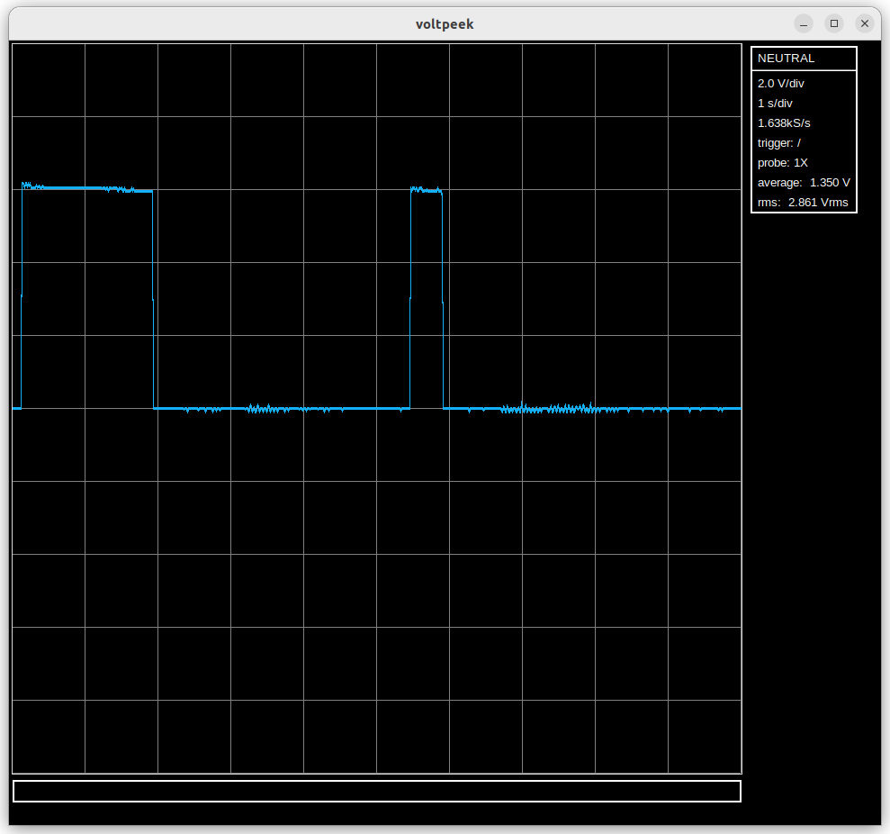
Recently I have been working on a way that Voltpeek software can be used even if you don't have the NS1 hardware. I have written some which uses the internal ADC on the RPi Pico instead of the external ADC and front end utilized by the NS1. This creates a rudimentary oscilloscope with just a Pico required on the hardware side. However, this obviously comes with some extreme limitations. First, the internal ADC can only sample at 500kS/s - a very low sample rate for an oscilloscope. Second, there is no front end, so the input signal is limited to 0V-3.3V with no ranges. Also, 0V is not present when the input is floating as it should be. I have only implemented auto trigger at this point, but normal trigger may be coming in the future as well as some front end options.
Below you can see a 100kHz square wave captured with this system:
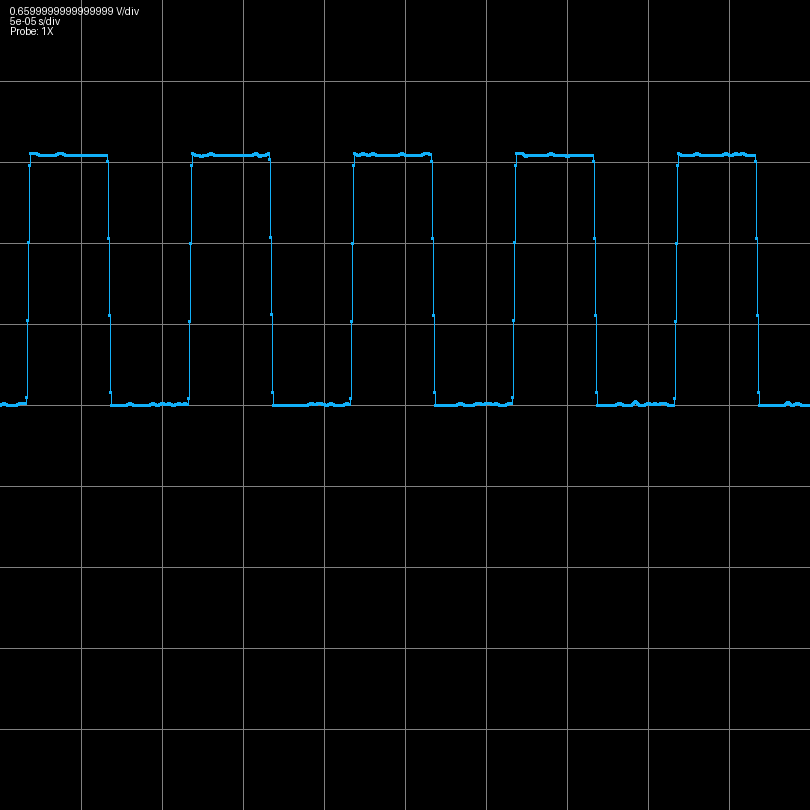
Recently, I have been working on improving the trigger flow. The original issue involved starting a normal trigger or single trigger and not triggering on a waveform, and then making another adjustment like horizontal or vertical scale or trigger type. This would cause the scope to freeze and forced you to close the software and power cycle the scope. Fixing this required making changes to both the software and firmware with respect to how an armed trigger is stopped. Unfortunately, now that the problem is fixed, there is another problem where there is minor waveform ghosting when adjusting the scale when a normal trigger waveform is refreshing. Fortunately, this is a relatively minor artifact and doesn't significantly affect functionality.
It is now possible to use normal trigger with multiple channels with the resulting waveforms synchronized. However, this feature is experimental; there are a lot of bugs and problems still.
The two oscilloscopes are synchronized by passing the trigger output from one scope to the trigger input of the next scope. This is shown in the picture below
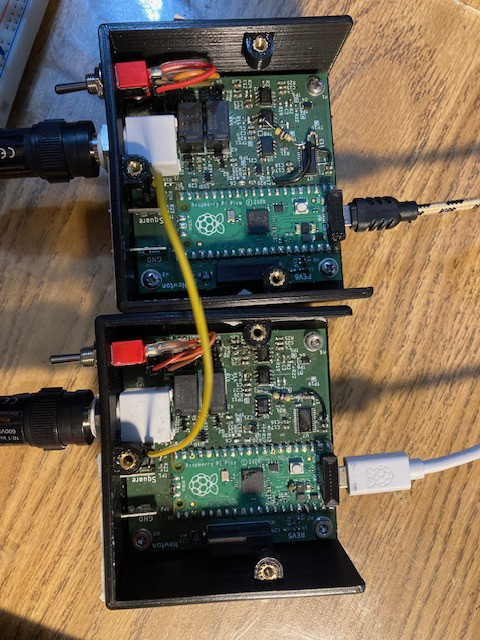
Currently, trigger input and output are just headers on the board, but the plan is for them to eventually be SMA connectors or similar mounted on the back of the scope.
Using these two channels it was possible to capture the following waveform (input and output of a half wave rectifier).
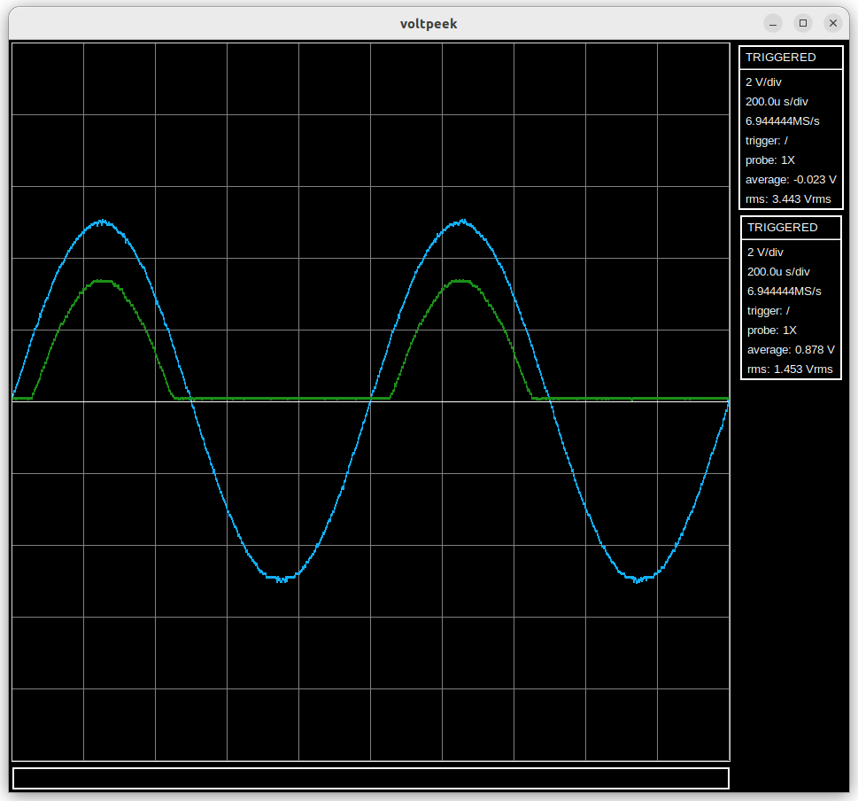
1) Better identification of scopes. There must be a master scope which actually triggers on a waveform and triggers other connected scopes. Currently it is very difficult to figure out which scope this is. To fix this each scope will have to store its own serial number which voltpeek can then read and display.
2) Trigger jitter between channels. It is possible to correct trigger jitter from one channel in software and apply the same correction to the other channel, but when trigger jitter is uncorrelated channel to channel, it becomes a problem again. This is noticeable on very low time scales.
3) Various bugs related to freezing and the waveforms not being displaced correctly.
4) Add synchronization for auto trigger. This will require new PIO code.
I have begun work on multiple channels. Multiple channels are implemented by plugging in multiple NS1s into the same host computer; Voltpeek can then connect to both of them and capture data. Each NS1 is a channel. The channels are not synchronized yet. The waveforms below show the same square wave, but they appear offset. There is a way to synchronize them using the trigger circuit; I just haven't tried to implement it yet.
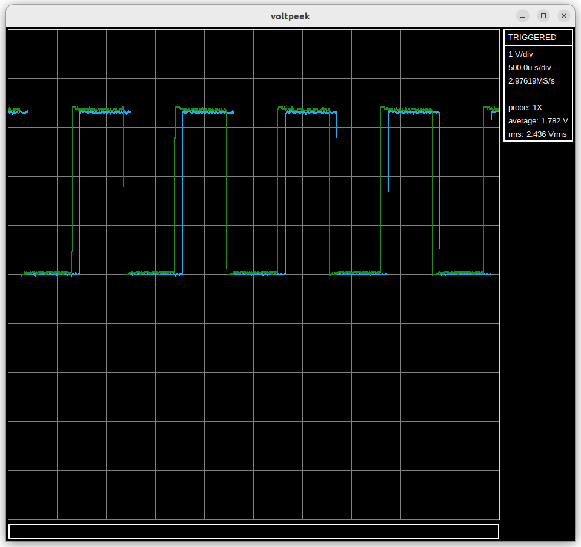
In Voltpeek, it is now possible to zoom in on a stopped capture correctly. An example of this is shown:
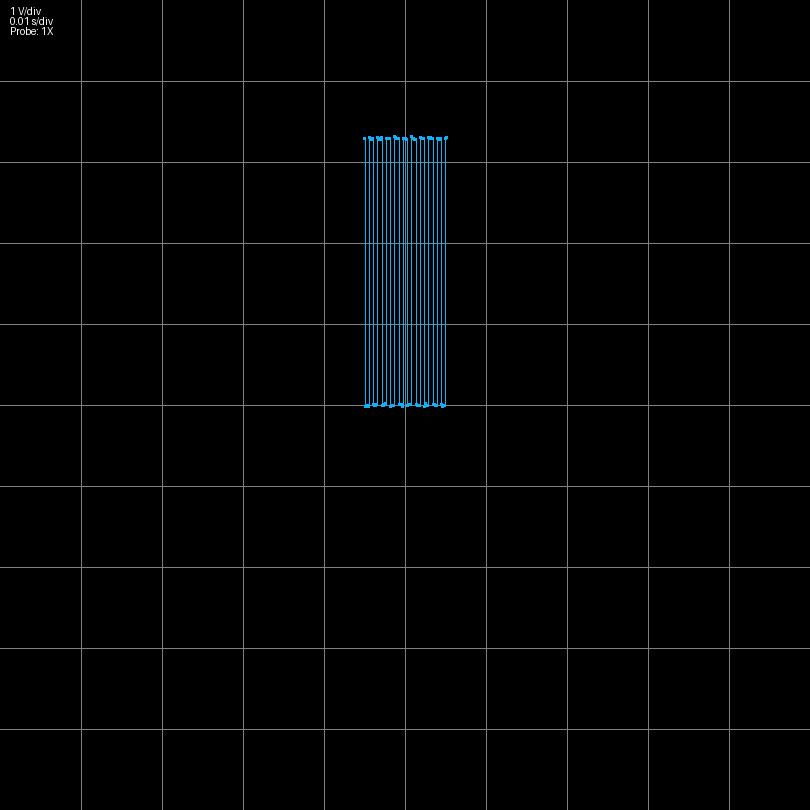
I have discovered that adding a low pass filter in between the last op amp stage and the ADC like shown below improves the distortion performance of the scope.
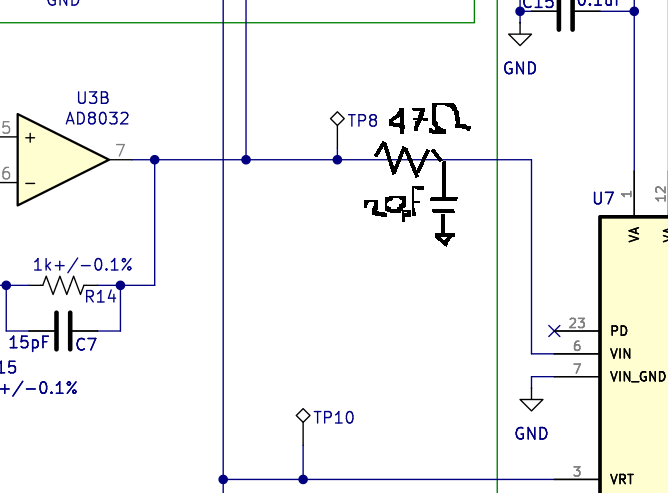
This has -3dB frequency of ~170MHz, so it does not lower the bandwidth of the scope. Rather, as mentioned in the datasheet of the ADC08100, the circuit absorbs energy coming out of the ADC input.
Below are triangle waves measured using scopes without and with this modification.
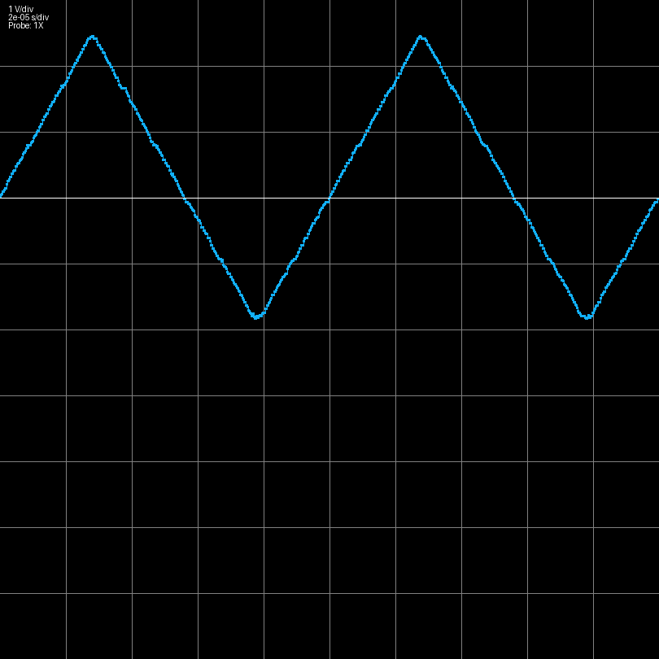
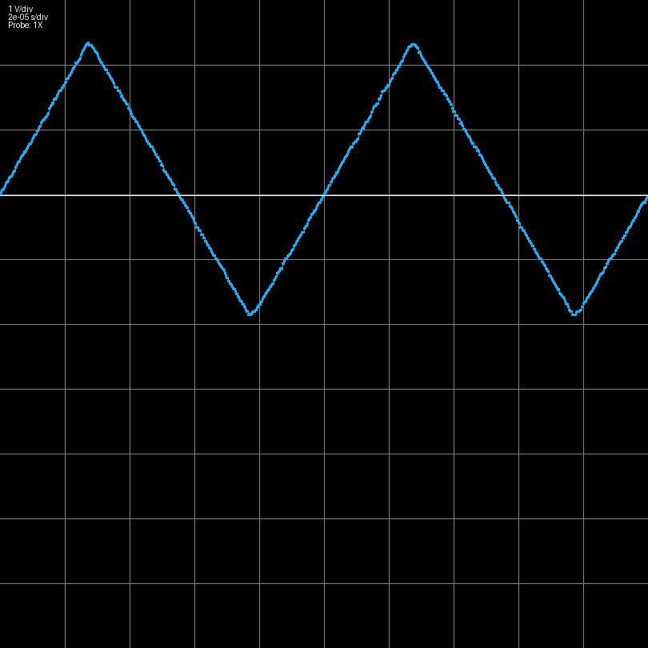
A falling edge trigger feature has been added. An RC discharge waveform is shown below demonstrating this:
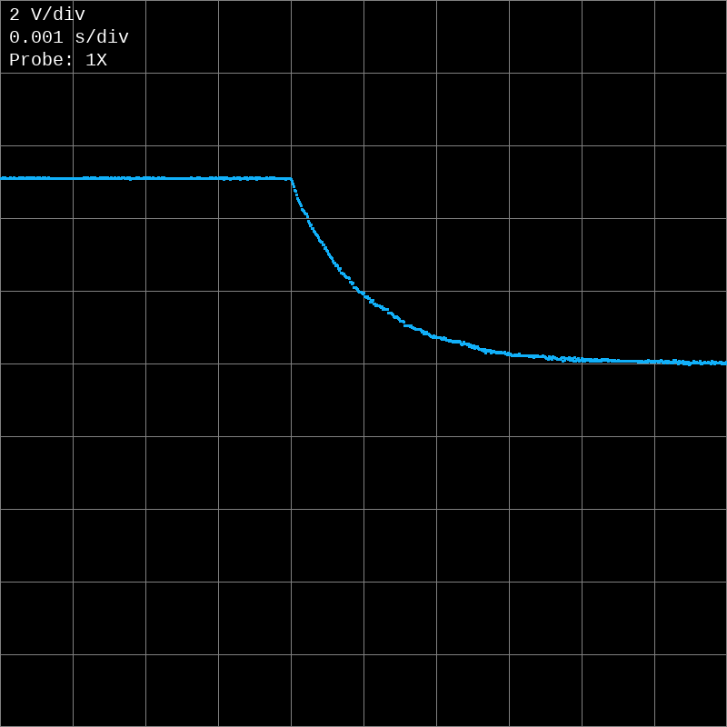
The trigger event is finally recorded at the center of the capture instead of the start. This is achieved using a more complicated PIO program, and a DMA ping pong configuration that creates a ring buffer. Here is an example RC circuit waveform that demonstrates this capability: